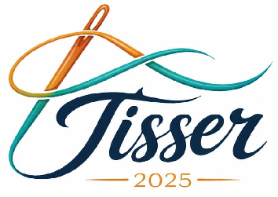

Audit Readiness Program

Audit Readiness & QMS
Une plateforme professionnelle destinée à accompagner les équipes industrielles dans la mise en conformité, la maîtrise des processus qualité et la préparation des audits techniques acheteurs.
Préparation des processus, documents, compétences et preuves objectives nécessaires avant l'audit officiel.
Le programme vise à construire une organisation qualité robuste permettant de démontrer la conformité des processus industriels, la maîtrise documentaire et l'efficacité opérationnelle.
Mettre en place un système management qualité structuré répondant aux exigences des audits techniques acheteurs.
Déployer une démarche progressive basée sur le diagnostic, la formation, l'accompagnement terrain et l'amélioration continue.
Garantir la disponibilité des documents, des enregistrements et des preuves nécessaires pour démontrer la conformité.
Le programme couvre les principaux domaines nécessaires à la maîtrise d'un système qualité industriel et à la préparation d'un audit technique acheteur.
Création, organisation, validation et maîtrise des documents qualité : procédures, instructions et enregistrements.
Maîtrise des opérations, contrôle des procédés, identification des risques et suivi des performances.
Réception, identification, stockage, traçabilité et contrôle des matières premières.
Maintenance préventive, disponibilité des équipements, étalonnage et suivi des interventions.
Développement des compétences, sensibilisation qualité et accompagnement des équipes.
Prévention des risques, conformité réglementaire et culture sécurité.
Les livrables permettent de construire une base documentaire maîtrisée et démontrable lors des audits.
Structure générale du système management qualité.
Méthodes définissant les règles opérationnelles.
Standards applicables aux activités terrain.
Supports d'enregistrement et preuves objectives.
Mesure de performance et suivi d'amélioration.
Outils de vérification avant audit officiel.
Documents pédagogiques pour les équipes.
Evaluation finale et plan d'amélioration CAPA.
Analyse initiale, organisation du projet, identification des écarts et planification.
Contrôle réception, identification, stockage et traçabilité.
Contrôle qualité, conformité produit, processus et standards opérationnels.
Suivi KPI, analyse des résultats, formation et amélioration continue.
Simulation d'audit, traitement CAPA et préparation finale.
Une approche progressive permettant de structurer, déployer et vérifier les exigences qualité.
Réunion de démarrage, diagnostic et définition des priorités.
Création documentaire, formation et mise en application.
Suivi des pratiques, coaching et amélioration.
Audit blanc, CAPA et préparation finale.
Pilotage stratégique, ressources et décisions.
Application des standards et maîtrise des opérations.
Contrôle, indicateurs, audits et amélioration.
Fiabilité équipements et maintenance préventive.
Gestion des matières et traçabilité.
Formation, compétences et sensibilisation.
Développez les compétences de vos équipes grâce à un programme de formation orienté qualité, conformité et performance industrielle.
Comprendre les principes du système management qualité et l'approche processus.
Créer, appliquer et maintenir les documents nécessaires au système qualité.
Développer les compétences nécessaires pour identifier les écarts et opportunités d'amélioration.
Impliquer les équipes dans la prévention des défauts et l'amélioration continue.
Suivi des principaux axes de préparation avant l'audit technique.
Documentation maîtrisée
Processus qualité
Personnel formé
Préparation finale
Vérification des éléments essentiels avant la réalisation de l'audit officiel.
Une préparation structurée permet de réduire les risques de non-conformité et de démontrer la maîtrise des processus industriels.
La direction, la qualité, la production, la maintenance, le magasin et les ressources humaines participent activement.
Disposer d'une organisation capable de présenter des preuves objectives lors d'un audit acheteur.
Pour toute information concernant l'accompagnement Audit Readiness et la formation QMS.
Programme professionnel Audit Readiness & QMS.
Royaume du Maroc
contact@tissir2025.com
+212 XX XX XX XX